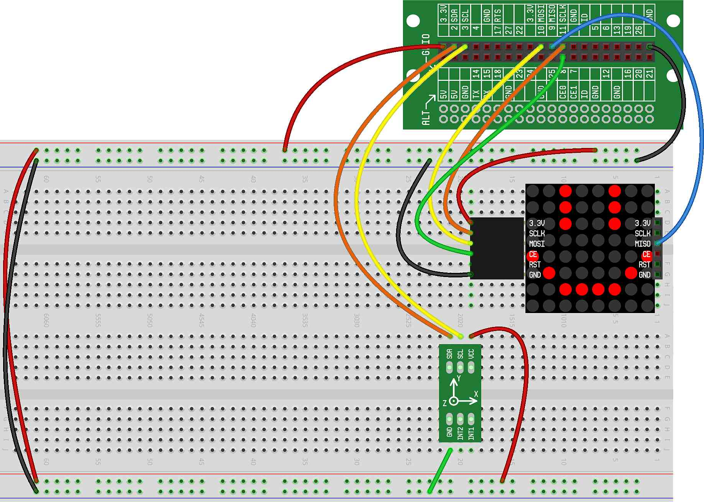

In this project, we will expand on the previous "balancing dot" project by adding movement in the Y direction (up/down) as well as the X direction. Also, we'll keep the dot from moving off the LED Matrix display.
The kit should be wired exactly the same as the previous project. Here is what your breadboard should look like:
Here is the updated code...the code that's new is highlighted with arrows, and we'll discuss that code below:
The new additions we've made are (highlighted with arrows above):
On Line 18, we stop the dot from rolling off the display. To do this, we
use min() and max() functions to ensure that the
value of x is never less than zero, or greater than the width of the
display. min() returns the smallest value of the parameters it
is given, and max() returns the largest value of the
parameters it is given. CREATOR Kit to make the dot move.
On Lines 20 through 24, we repeat everything we did for the X direction in the Y direction. This allows the dot to move up, down, left, or right on the display.
Give it a try...
Can you modify the software so that tilting the kit up causes the the dot to move up instead of down. Likewise, can you reverse the direction the dot moves when tilted down, right and left?
When the dot reaches the edge of the display, instead of having it stay at the edge, can you make it appear at the opposite edge?
If the user moves the dot so that it touches a specific coordinate, can
you break out of the while loop?
Secret code: If the user moves the dot so that it touches a sequence a
specific coordinates, can you break out of the while loop? For
example, say the coordinates are (0,0), (7,7) and (0,3). The user must
first move the dot to the lower left corner, then the upper right corner,
then position (0,3) on the left side. Once the dot passes through those 3
positions in order, exit the while loop.